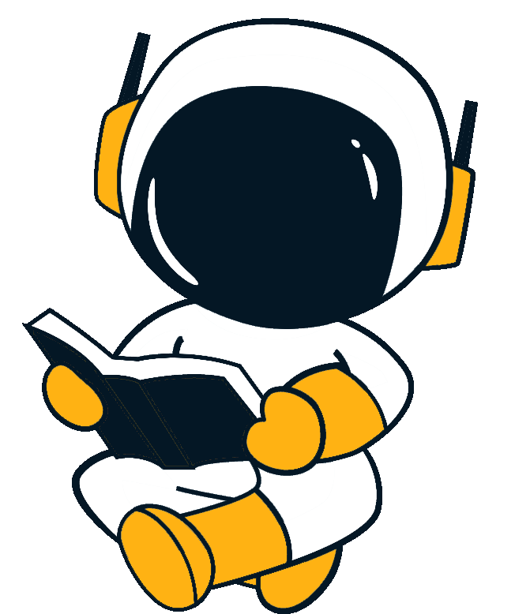

Tipologia: corsi di orientamento presso le scuole;
Luogo: Dipartimento di Fisica e Gelogia;

Il corso "Stelle, Galassie ed Universo" si svolgerà a partire dal 25 Aprile, per un totale di 30 ore.Il corso sarà rivolto a circa una quarantina di studenti dell'Istituto “Bernardino di Betto” di Perugia ed ha lo scopo di fornire un quadro genarale delle attuali conoscenze sulle principali componenti dell'Universo. Il programma nel dettaglio:
Le stelle e la loro evoluzione Docente: Prof.ssa Sara Palmerini
Le Galassie Docente: Prof. Gino Tosti x
La struttura a larga scale dell'Universo Docente: Prof. Gino Tosti
L'Universo ad alta energia Docente: Dott. Stefano Germani
Studiare l’Universo attraverso l’infinitamente piccolo
Tipologia: corsi di orientamento presso le scuole;
Luogo: Dipartimento di Fisica e Gelogia;
Il corso "Studiare l’Universo attraverso l’infinitamente piccolo" si svolgerà nei pomeriggi del 23 e 25 Gennaio, per un totale di 15 ore. Il corso sarà rivolto a una quindicina di studenti del Liceo Sceintifico G. Alessi e ha lo scopo di introdurre i ragazzi alla fisica delle astroparticelle e a misteri ancora irrisolti del nostro Universo. Il Programma nel dettaglio:
Di che cosa è fatta la materia?
Attraverso un excursus storico, partiremo dall’atomo di Democrito per arrivare all’attuale modello standard della fisica delle particelle spiegandone le principale caratteristiche. Vedremo inoltre fondamenti dell’interazione particella-materia per capire come funzionano i rivelatori di particelle.
Docente: Dott.ssa Maura Graziani
Antimateria e Materia Oscura
Verranno affrontati due dei più grandi misteri attuali della fisica: di che cosa è fatta la materia oscura? Che fine ha fatto l’antimateria di origine primordiale? Scopriremo come i fisici cercano sia teoricamente che sperimentalmente di rispondere a queste domande.
Docente: Prof. Nicola Tomassetti
Raggi Cosmici
Di origine galattica ed extragalattica, i raggi cosmici colpisco continuamente l’atmosfera terrestre e raggiungono la superficie della terra. Vedremo come possiamo avere informazioni sul nostro universo attraverso il loro studio e come funziona un rivelatore per raggi cosmici nello spazio. Docente: Alessio Ubaldi
Fotoni e neutrini
I fotoni e i neutrini rappresentano la parte neutra (ovvero priva di carica) dei raggi cosmici. Spiegheremo come il loro studio porti informazioni molto importanti su alcune delle questioni fondamentali ed ancora aperte della fisica moderna, quali la produzione, accelerazione e trasporto dei raggi cosmici, la materia in stati estremi di alta densità e campi elettromagnetici, la natura della materia oscura, l’opacità dell’Universo e gli effetti sulla propagazione cosmologica della luce.
Docente: Dott. Stefano Germani
Onde Gravitazionali
Predette dalla teoria della Relatività Generale di Albert Einstein nel 1915, le onde gravitazionali sono state osservate per la prima volta il 14 settembre 2015 dalle collaborazioni scientifiche di LIGO e VIRGO. Vedremo come è stato possibile effettuare questa importante misura e come le onde gravitazionali portino informazioni sulle loro violente origini e sulla natura della gravità, informazioni che non possono essere ottenute in altro modo.
Docente: Maria Lisa Brozzetti
Astronomia Multimessagera
L’astronomia multimessaggera è una nuova via di esplorazione dell’Universo che combina osservazioni ottenute da diversi “messaggeri” cosmici: radiazione elettromagnetica, neutrini, raggi cosmici, onde gravitazionali.
La sua nascita è stata annunciata ufficialmente il 16 ottobre 2017 quando la fusione di due stelle di neutroni è stata osservata sia tramite onde gravitazionali che fotoni. Scopriremo quali sono le prospettive future di questa nuovissima branca della fisica.
Docente: Maria Lisa Brozzetti
da Lunedì
15
GENNAIO
Lab2Go 2024
Tipologia: Attività PCTO per scuole;
Luogo: Liceo Alessi/Dipartimento di Fisica e Gelogia;
Il Dipartimento di Fisica e Geologia, in collaborazione con l'INFN Perugia, partecipa al progetto Lab2Go 2023. Sono previsti 8 incontri pomeridiani durante i quali 16 ragazzi del liceo G. Alessi di Perugia, sotto la guida della ricercatrice Universitaria Maura Graziani, si cimenteranno nella costruzione di un rivelatore per raggi cosmici, acquisiranno dati e misureranno il rate dei muoni a terra.
Martedì
21
NOVEMBRE
ICD - International Cosmic Day 2023
Tipologia: Attività PCTO per scuole;
Luogo: Dipartimento di Fisica e Gelogia;
Link: ICD2023 - Perugia
Anche quest’anno alcuni dei laboratori leader nella ricerca della fisica delle particelle, tra cui il DESY in Germania e il Fermilab negli Stati Uniti organizzano l’International Cosmic Day (ICD). Tale evento è fissato per il 21 Novembre 2023.
Le attività dell’ICD hanno lo scopo di far incontrare studenti, insegnanti e ricercatori per scoprire e approfondire le proprietà e il significato delle informazioni che ci arrivano dall’Universo attraverso i raggi cosmici.
Gli studenti troveranno risposte a domande come: che cosa sono le particelle cosmiche? da dove provengono? che messaggi ci portano? come possiamo misurarle?
A Perugia, ICD è organizzato dal Dipartimento di Fisica e Geologia dell’Università e dalla Sezione locale dell’Istituto Nazionale di Fisica Nucleare, INFN-Perugia. L’iniziativa si svolgerà dalle ore 9:30 alle 13:00 presso i laboratori del Dipartimento e vedrà la partecipazione di studenti e studentesse del Liceo Scientifico G. Alessi e del Liceo Classico Musicale Mariotti. Studenti e studentesse, guidati dai loro docenti e dai ricercatori del Dipartimento, avranno l’occasione di fare un viaggio nel mondo dei raggi cosmici e delle astroparticelle con seminari interattivi e misure dal vivo del flusso dei muoni atmosferici.
Mercoledì
4
OTTOBRE
PER2A0P2S3 - Decoding the Lives of Red Giant Stars: New Spectroscopic Clues
Tipologia: Seminario;
Luogo: Dipartimento di Fisica e Gelogia, aula A, ore 15:00;
Link: PER2A0P2S3 - Chris Sneden
Christopher Sneden, Professore emerito presso il Dipartimento di Astronomia (University of Texas at Austin) sarà ospite di PER2A0P2S3 (Perugia Advanced Physics Seminars) proponendo il seminario "Decoding the Lives of Red Giant Stars: New Spectroscopic Clues".
Abstract: Stars in their late evolutionary stages undergo many changes as their interior engines use up nuclear fuel and prepare to die violently as supernovae or meekly as white dwarfs. These aging red giant stars stars execute major movement in the Hertzprung-Russell diagram, and they pulsate on short and long timescales. Their surface light element abundances (e.g. CNO) change in expected ways but sometimes also in baffling ways. In particular, for a few decades we have struggled to understand the curious appearance of extremely large lithium abundances in about 1% of red giants. More recently, we have discovered that many lithium-rich red giants have extremely strong helium 10830A absorption lines, which suggests abnormally active chromospheres of these stars. Additionally, both the Li and He spectroscopic features often are accompanied by large stellar rotational velocities. In this talk I will explore the correlations among these spectroscopic features, and try to relate these observational parameters to recent past actions and expected near-future changes in red giants.
PER2A0P2S3 è un ciclo di seminari su vari temi di Fisica, di Fisica-Matematica e più in generale vertenti su argomenti che hanno la Fisica come scienza di riferimento. Si svolgono nella sede di via Alessandro Pascoli del Dipartimento di Fisica e Geologia, in orario pomeridiano, tipicamente di mercoledì o giovedì. A chiusura di ogni seminario il Dipartimento offre un bachetto di frutta.
Tutti sono invitati a proporre seminari.
Venerdì
29
SETTEMBRE
La notte dei Ricercatori 2023
Tipologia: Festival scientifico;
Luogo: Perugia;
Link: Sharper 2023
SHARPER – SHAring Researchers’ Passion for Enhanced Roadmaps – La Notte Europea dei Ricercatori in 14 città italiane. Il 29 settembre 2023 a Ancona, Cagliari, Camerino, Catania, Genova, L'Aquila, Macerata, Nuoro, Palermo, Pavia, Perugia, Sassari, Terni e Trieste un grande evento dedicato al mondo della ricerca e ai suoi protagonisti.
ll progetto è coordinato da Psiquadro in partnership con Università degli Studi di Perugia, INFN, Università Politecnica delle Marche, Università degli Studi di Palermo, Università degli Studi di Catania, Università degli Studi di Cagliari, Università di Genova, Università di Sassari, Immaginario Scientifico e Observa.
Lunedì
15
MAGGIO
Finale Lab2Go
Tipologia: Formazione studenti;
Luogo: Dipartimento di Fisica e Geologia - Aula D, Perugia;
Link: Il progetto Lab2Go
Il Dipartimento di Fisica e Geologia,
in collaborazione con l'INFN Perugia, partecipa al progetto Lab2Go 2023. Quest'anno a partecipare sono 11 ra
gazzi del liceo G. Alessi di Perugia che sotto la guida della ricercatrice Universitaria Maura Graziani si so
no cimentati nella costruzione di un rivelatore per raggi cosmici, hanno acquisito dati e misurato il rate de
i muoni a terra. L'ultimo incontro del progetto che si terrà a Giugno in data da stabilire, prevede una prese
ntazione dei ragazzi sul lavoro che hanno svolto e a seguire i ragazzi si cimenteranno nella costruizione di
una camera a nebbia!;
Sabato
6
MAGGIO
Una notte all'osservatorio
Tipologia: Evento aperto al pubblico;
Luogo: Osservatorio di Coloti, Montone (PG).
di Coloti.
Link: Iscriviti all'evento
Osservazione del cielo notturno dall’Osservatorio Astronomico\
di Coloti.
Sabato
22
APRILE
“Ascoltare” l’Universo con le onde gravitazionali: la nascita dell’astronomia multimessaggera
Tipologia: Conferenza per il pubblico;
Luogo: Foligno (PG).
Link: Evento
Ripercorreremo attraverso simulazioni video e materiali interattivi l’affascinante
scoperta delle onde gravitazionali e la nascita dell’astronomia multimessaggera.
Racconteremo come lo strumento Virgo è in grado di registrare i deboli segnali
prodotti da buchi neri o stelle di neutroni che si fondono tra di loro.
L’esplorazione del nostro Universo attraverso questo nuovo messaggero è appena
iniziata! Un nuovo osservatorio scientifico che si chiamerà “Einstein Telescope”
aprirà una nuova era di esplorazioni e di scoperte “ascoltando” fenomeni astrofisici
dalle regioni più remote dell’Universo.
Martedì
4
APRILE
Una notte all'osservatorio
Tipologia: Orientamento per studenti;
Luogo: Osservatorio di Coloti, Montone (PG).
di Coloti.
Link: Evento
Osservazione del cielo notturno dall’Osservatorio Astronomico di Coloti. Evento riservato\
agli studenti del Liceo Alessi di Perugia.
Giovedì
9
MARZO
Dall'infinitamente piccolo all'infinitamente grande
Tipologia: Orientamento per studenti;
Luogo: Liceo scientifico G. Alessi, Perugia;
Link: Evento
Lezione rivolta ai ragazzi del quarto e quinto anno del liceo scintifico in cui la ricerc\
atrice Universitaria Maura Graziani ha spiegato le basi del modello standard per poi passare a parlare della fisica dei raggi cosmici e delle tecniche di rivelazione degli stessi con un approfondimento sul rivelatore "Alpha Magnetic Spectrometer (AMS-02)".
Venerdì
3
MARZO
Una notte all'osservatorio
Tipologia: Orientamento per studenti;
Luogo: Osservatorio di Coloti, Montone (PG).
Link: Evento
Osservazione del cielo notturno dall’Osservatorio Astronomico di Coloti. Evento riservato agli studenti dell'Istituto Comprensivo 15 di Solfagnano.